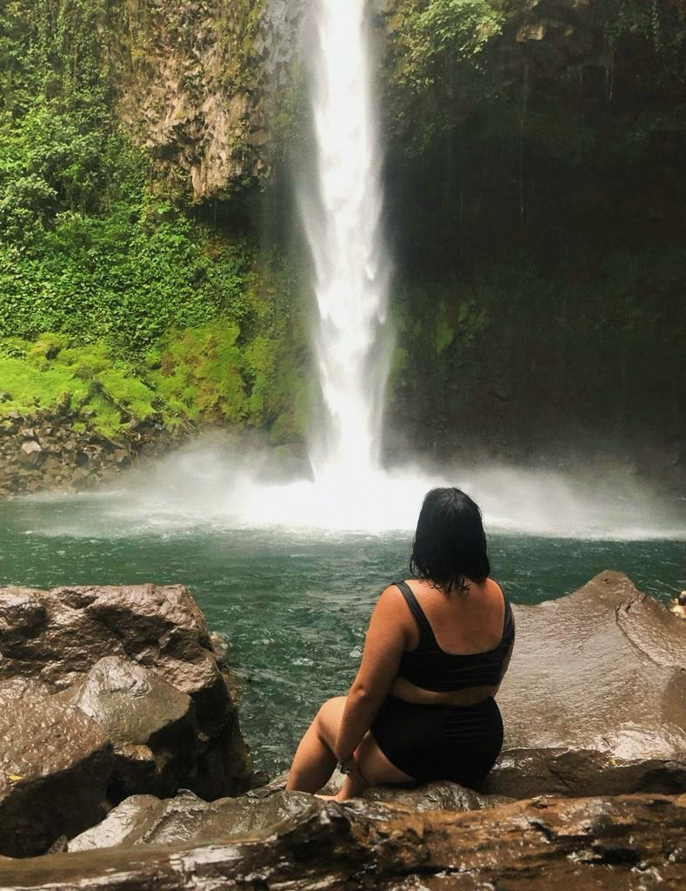

De route voor backpacken in Costa rica

San jose (5 dagen)
Dag 1: Bij aankomst in Costa Rica heb ik ingecheckt in mijn hotel en heb ik wat tijd genomen om uit te rusten van mijn reis.
Dag 2: Ik heb een bezoek gebracht aan de markt in San Jose, waar ik lokale producten en handwerk heb kunnen bewonderen en kopen.
Dag 3: Vandaag stond de beklimming van de Irazu vulkaan op het programma. Het was een indrukwekkende ervaring om naar de krater te wandelen en het adembenemende uitzicht te bewonderen.

Dag 4: Ik heb een ontspannen dag doorgebracht in het La Sabana park, waar ik heb gewandeld, gepicknickt en genoten van de prachtige natuur.
Dag 5: Het was tijd om La Fortuna te verkennen, dus ik ben vertrokken naar deze stad vol avontuur en natuurlijke schoonheid.
La fortuna (7 dagen)
Dag 1: Bij aankomst in La Fortuna heb ik ingecheckt in mijn hotel en heb ik wat tijd genomen om uit te rusten van mijn reis.
Dag 2: Ik heb genoten van een avontuurlijke dag in het Treetop Walk park, waar ik tussen de boomtoppen liep en genoot van prachtige uitzichten op het regenwoud.
Dag 3: Ik bezocht de prachtige La Fortuna waterval, waar ik heb gezwommen in het verfrissende water en de schoonheid van de natuur heb bewonderd.
Dag 4: Op deze dag heb ik ontspannen in de natuurlijke warmwaterbronnen in de omgeving, waar ik heerlijk heb gebadderd en mijn spieren tot rust kon laten komen.

Dag 5: Ik heb een uitdagende hike gemaakt naar de Arenal vulkaan, waar ik zelfs lava stenen heb gezien. Het was een geweldige ervaring om zo dicht bij een actieve vulkaan te zijn.
Dag 6: Ik heb een bezoek gebracht aan het Luiaardjes bos, waar ik deze schattige dieren van dichtbij kon zien en meer kon leren over hun leefomgeving. Daarna heb ik een verfrissende duik genomen in een "swimming hole" om de dag af te sluiten.
Dag 7: Het was tijd om te vertrekken naar Monteverde, waar ik mijn avontuur in Costa Rica zou voortzetten.
Monteverde (5 dagen)
Dag 1: Bij aankomst in Costa Rica heb ik ingecheckt in mijn hotel en heb ik wat tijd genomen om uit te rusten van mijn reis.
Dag 2: Vandaag heb ik het cloud forest en de sky tram bezocht. Ik ben tussen de mistige boomtoppen gewandeld en heb genoten van het prachtige uitzicht op het nevelwoud.
Dag 3: Ik heb de stad bezocht en heb rondgestruind in de kleurrijke straten. Ik heb lokale markten bezocht, lokale gerechten geproefd en heb de lokale cultuur opgesnoven.
Dag 4: Vandaag stond de El Tigre waterval op mijn programma. Ik heb een prachtige wandeling gemaakt door weelderig groen en uiteindelijk de indrukwekkende waterval bereikt. Ik heb zelfs onder de waterval gezwommen voor een verfrissende ervaring.

Dag 5: Ik ben vertrokken naar Puerto Viejo, een prachtige kustplaats in Costa Rica. Onderweg heb ik genoten van adembenemende landschappen en ben ik enthousiast begonnen aan mijn volgende avontuur aan zee.
Puerto viejo (7 dagen)
Dag 1: Bij aankomst in Costa Rica heb ik ingecheckt in mijn hotel en heb ik wat tijd genomen om uit te rusten van mijn reis.
Dag 2: Ik heb een ontspannen dag op het strand doorgebracht, genietend van de zon, zee en het zand.
Dag 3: Helaas kreeg ik voedselvergiftiging en moest ik de hele dag rusten en herstellen in mijn hotelkamer.
Dag 4: Omdat ik nog steeds last had van de voedselvergiftiging, heb ik wederom de dag doorgebracht in mijn hotelkamer, rustend en herstellend.
Dag 5: Gelukkig voelde ik me beter en kon ik eindelijk weer genieten van het strand. Ik heb verschillende stranden bezocht en ben gaan beach hoppen.

Dag 6: Vandaag heb ik langs de straten van Costa Rica geshopt en heb ik lokale souvenirs en handwerk gekocht.
Dag 7: Het werd tijd om naar de prachtige Bosas del Toro in panama te gaan. Ik vertrok richting dit gebied vol bossen en avontuur, klaar om nieuwe ervaringen op te doen.
Bekijk hier de reis in Panama